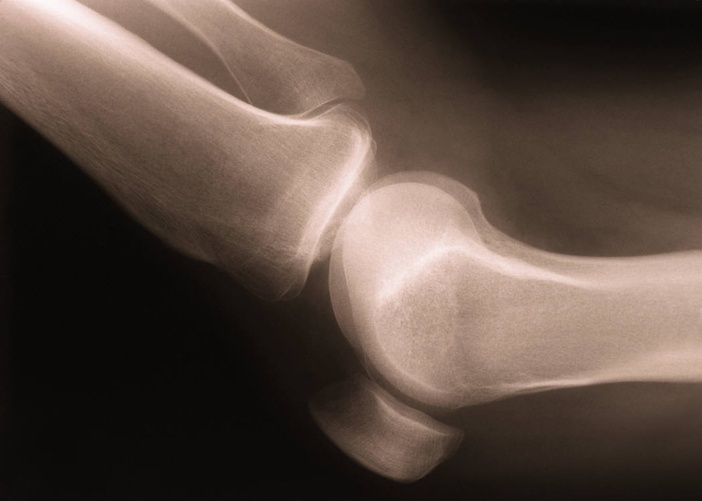

Medical Putty
Charley Yan
Spring 2012

The healing of a complex fracture in the body is an
arduous and time consuming process that effectively immobilizes the
targeted area for a period of two to four months. Currently, the
treatment of serious fractures requires isolating the fractured area
with bone grafts, which involves the transplantation of bone tissue
into the damaged section to stimulate healing. Pins, plates or screws
tie the grafts to healthy bone while external fixators provide support
as the bone heals.
While the success rate of transferring and
healing is high, the process has many drawbacks. The recovery period
after a successful surgery ranges from 2 weeks to 4 months, potentially
barring serious physical activity for 6 months. In addition, the cost
of bone grafting ranges from $32,677 to $37,854, depending on the cost
of the materials, doctors, and aftercare. According to ADAM, an
organization that the American Medical Association uses to find these
costs, the actual procedure itself, which involves transplanting the
bone sample, only costs around $300-$900. For many complex fractures,
such as the ones involving the face, finding a graft of appropriate
size is near impossible.
The setbacks are readily apparent on the
battlefield. Combat situations are tough and can lead to a variety of
complex fractures throughout the body, which must be quickly repaired
and taken care of or more permanent damage will occur. The injured area
most often is amputated since a donor for the bone graft is hard to
find. Even more apparent are the mental effects that are
associated with a recuperation period of 3-6 months after the injury in
question has been treated. Post-Traumatic Stress Disorder (PTSD)
generally occurs during this time, as patients are given time to brood
over traumatic events. A significantly shortened recovery period may
lead to a smaller chance of developing PTSD and other psychological
injures. However, what if there was an alternative method in which
bones could be healed more quickly?
Scientists are developing more cost
effective and efficient way to heal bones. According to Steve Stice, a
Georgia Research Alliance Eminent Scholar and director of the UGA
Regenerative Bioscience Center, “large-bone defects must be stabilized
and necessitate technologies that induce rapid bone formation in order
to replace the missing tissue and allow the individual to return to
rapid function. To date, no single material can suffice”. Essentially,
a new material that is similar to the bone in molecular structure must
be used to induce and support the rapid healing of the bone.
A variety of groups has come up with their
own answers to this solution ranging from large biopolymers to tiny
synthetic fibers, but the most promising solution comes from a
coalition of researchers from University of Texas - Austin, University
of Georgia (UGA), and Rice. The group was awarded $7.5 million dollars
by DARPA from 2009-2011 and seeks to combine the technologies of
orthopedics, materials science, and mechanics to tackle this problem.
The result of their ambitions lies in the formation of a product that
the researchers have called “fracture putty.”